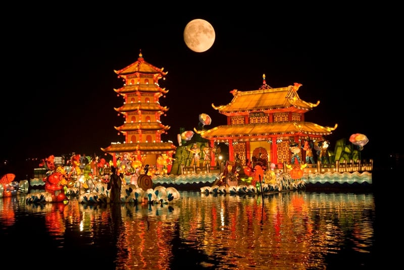
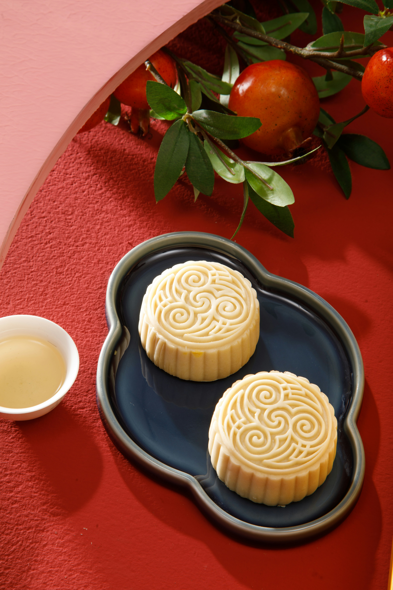
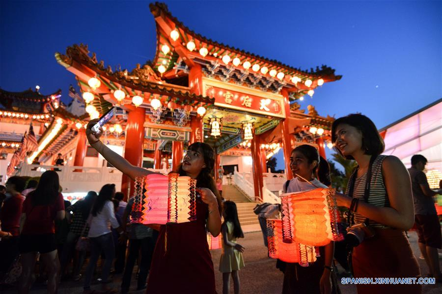
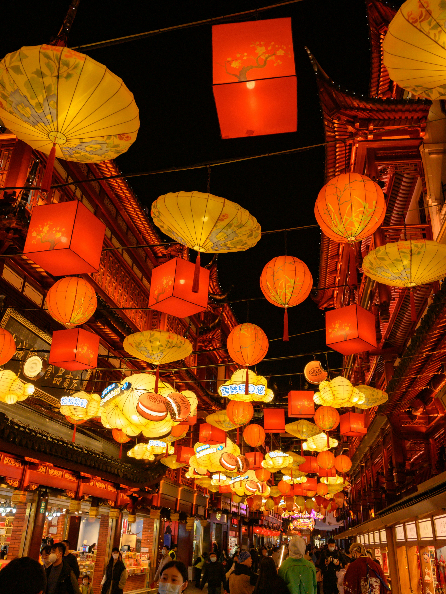

¿Qué es el Festival del Medio Otoño?
El Festival del Medio Otoño es una de las celebraciones más importantes de la cultura china y simboliza la unión, la gratitud y la contemplación de la luna llena.
Esta festividad se celebra durante la noche del octavo mes lunar, cuando la luna alcanza su máximo brillo y belleza.
Origen y Leyendas
Una de las leyendas más conocidas del festival es la historia de Chang’e, la diosa de la luna, quien ascendió al cielo después de beber un elixir de inmortalidad.
Desde entonces, las familias se reúnen para admirar la luna y compartir momentos especiales bajo el cielo nocturno.
Tradiciones Principales
- Observar la luna llena
- Compartir pasteles lunares
- Encender faroles decorativos
- Reuniones familiares nocturnas
- Celebraciones culturales y danzas
Galería del Festival


